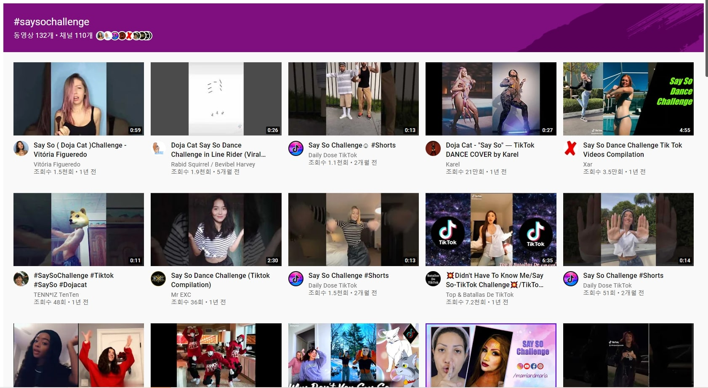
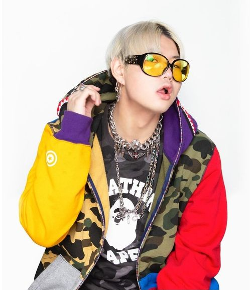

로 빌보드 HOT100 1위를 얻은 뒤 연달아 상업적으로 큰 성공을 거두며 동시대에 동일한 방식인 틱톡 챌린지로 유명해진 메간 디 스탤리언과 함께 성공적으로 메인스트림에 입성한 신예 여성래퍼가 되었다.

위에 첨부한 스크린샷과 같이 해시태그 ((#)say so - 도자캣의 앨범 수록곡 중 하나 ) saysochallenge 가 틱톡에서 유행하게 되었고 그에 힘 입어 도자캣이 빌보드 차드 상위권에 위치되면서 성공한 신예 여성래퍼과 될 수 있었다.
디핵(D-Hack)

디핵(D-Hack)은 대한민국과 일본을 오가며 활동 중인 랩퍼로 본명은 이동훈 만 26세의 랩퍼이며, 위에서 소개한 도자캣과 같이 틱톡 챌린지를 통해 재조명 받은 스타이다. 디핵의 노래중 OHAYO MY NIGHT 라는 곡이 틱톡을 통해 대중들에게 알려졌고 현재(21.10.04 오후 9시 30분 기준)멜론 차트 4위에 위치해 있다.